← Back to Projects
Jóia de África
Product Design for African Cuisine
A university project in collaboration with the Aga Khan Foundation focused on strategic rebranding and product development for a Lisbon-based African restaurant. Creating a portable working station that celebrates authentic African culture and cuisine while supporting small business operations through thoughtful design and cultural authenticity.

Complete Product Overview
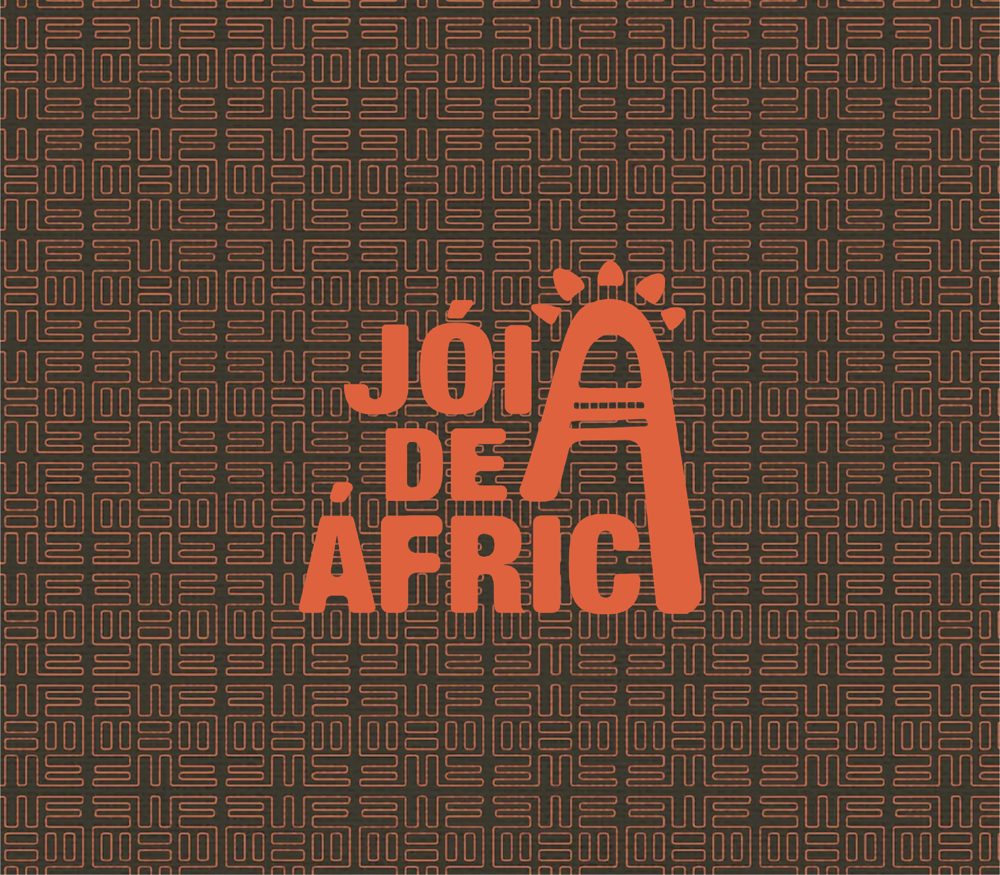
Visual Identity Development
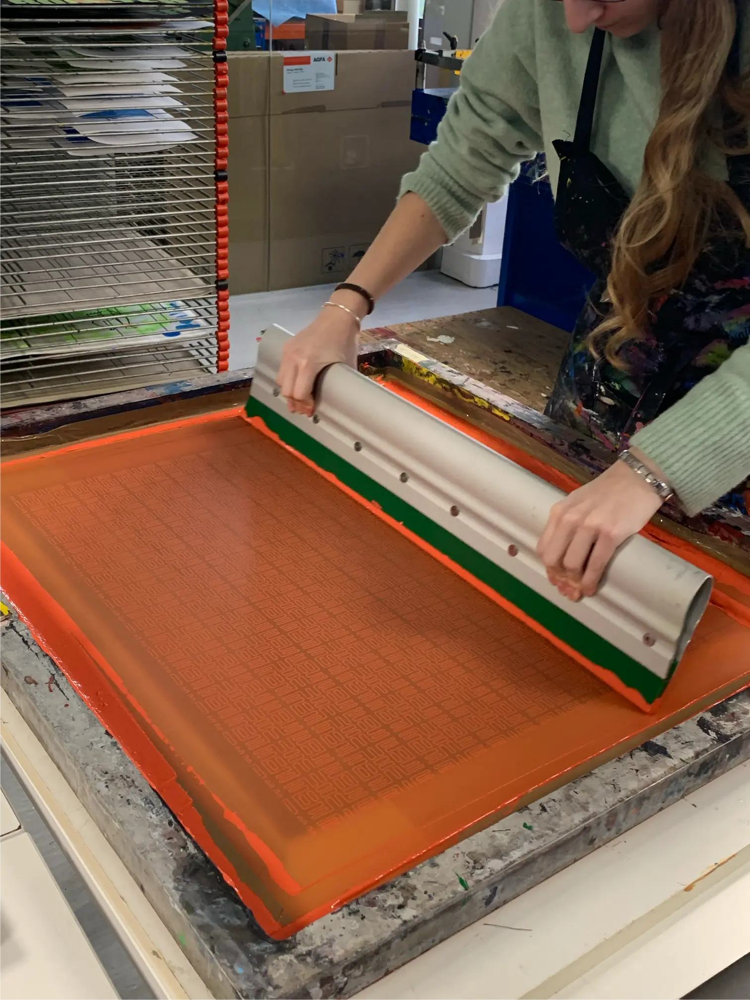
Logo System & Applications
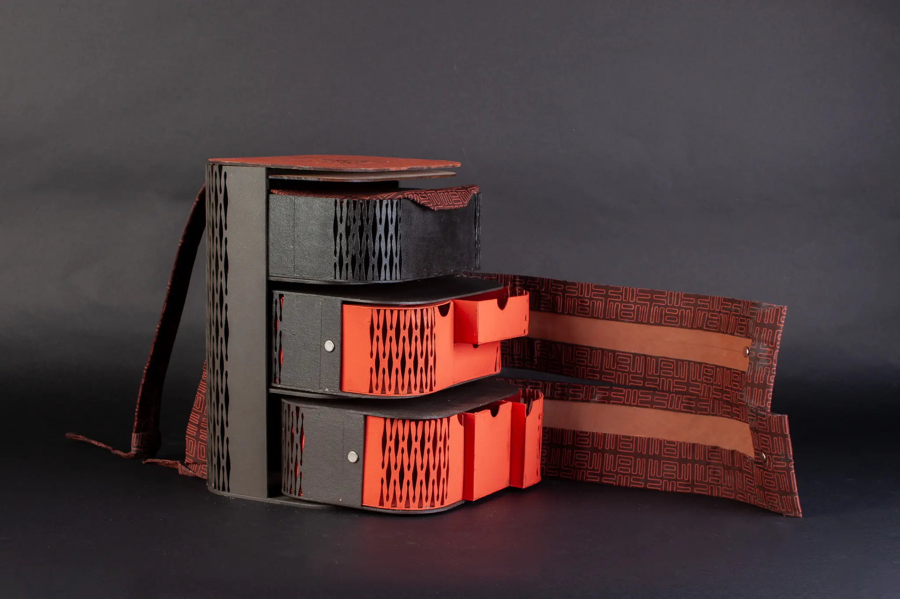
Front View Design Detail
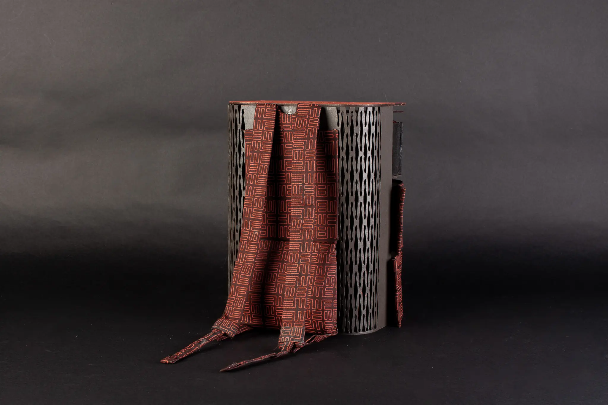
Back Panel Construction
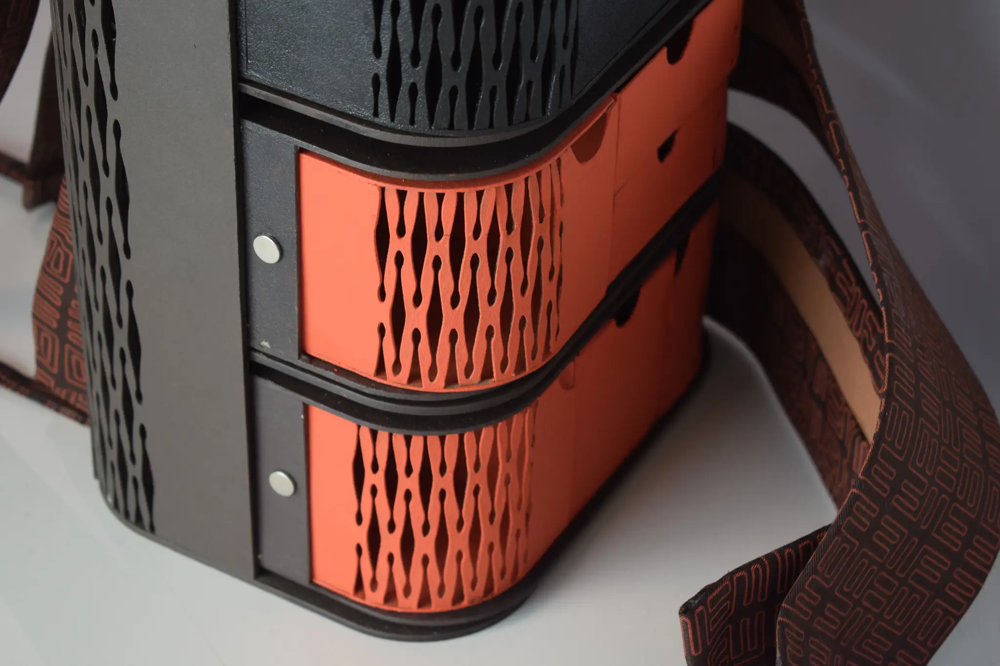
Craftsmanship Details
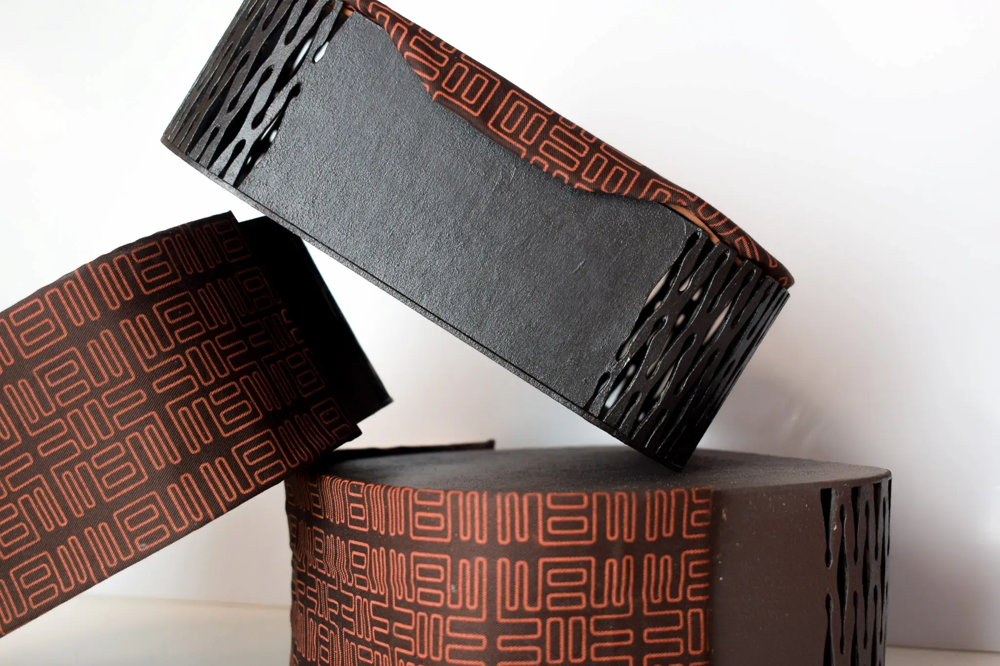
Three-Drawer Modular System
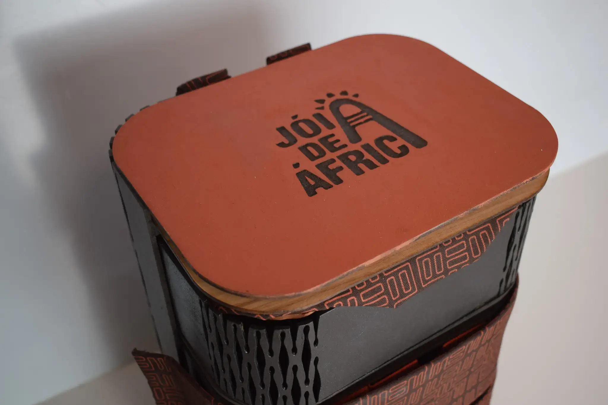
Storage Organization Layout
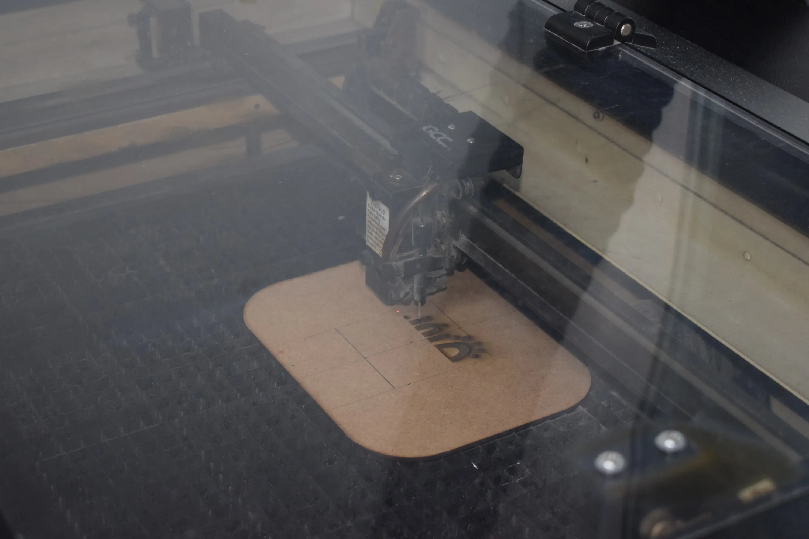
Development Process
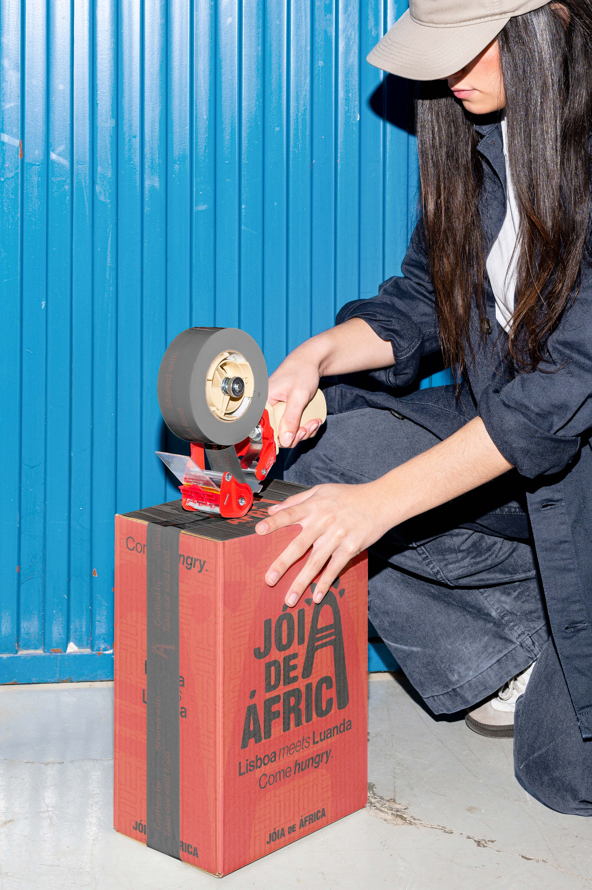
Packaging Design
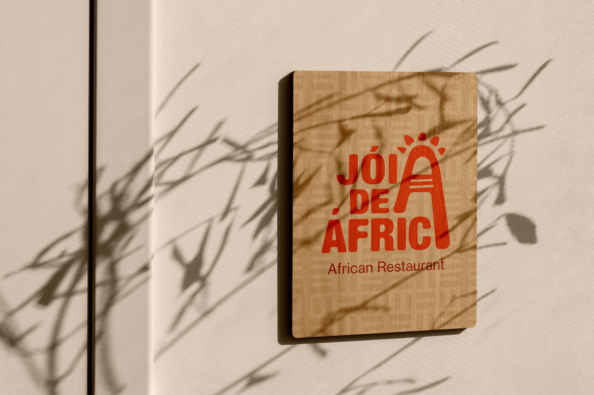
Signage System
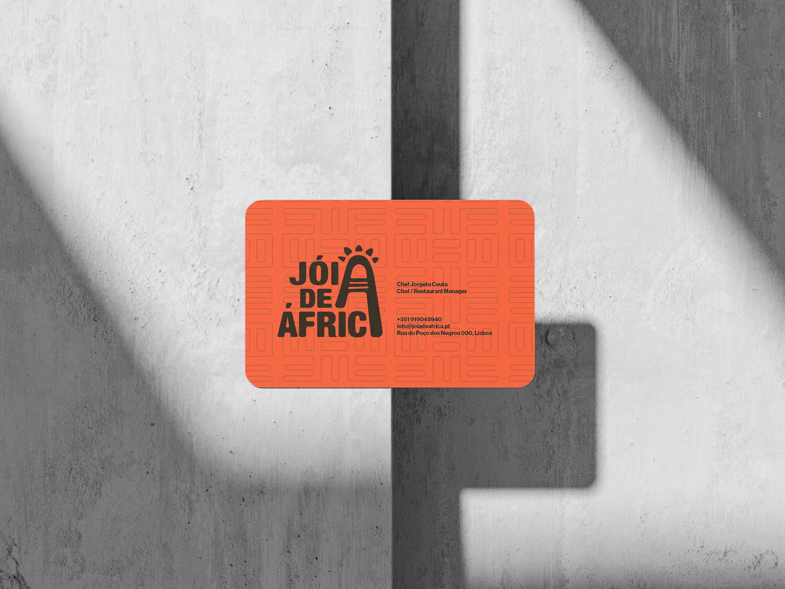
Business Card Design